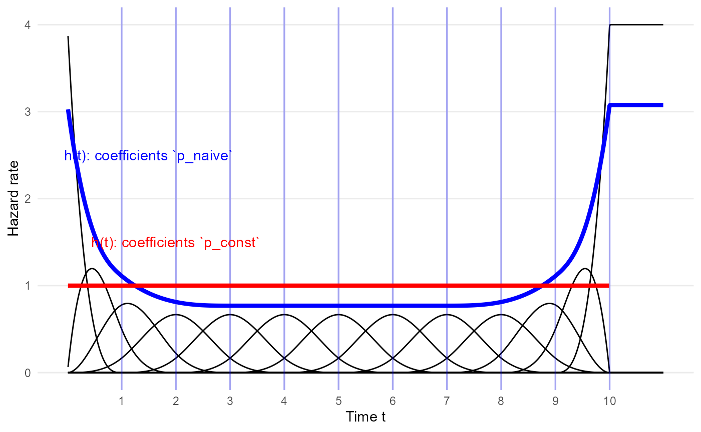
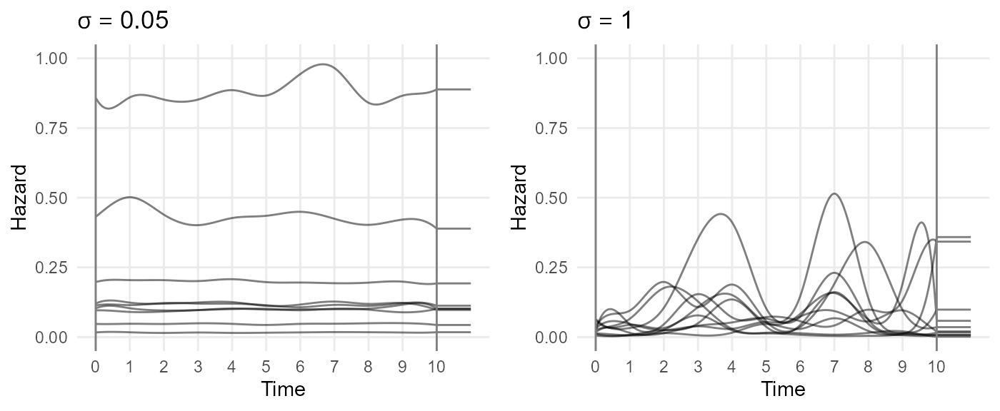
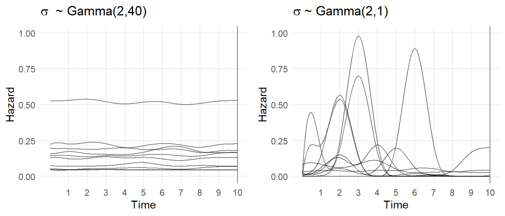
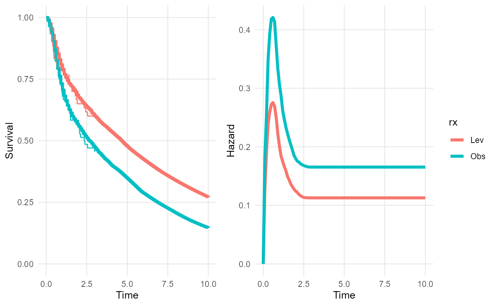
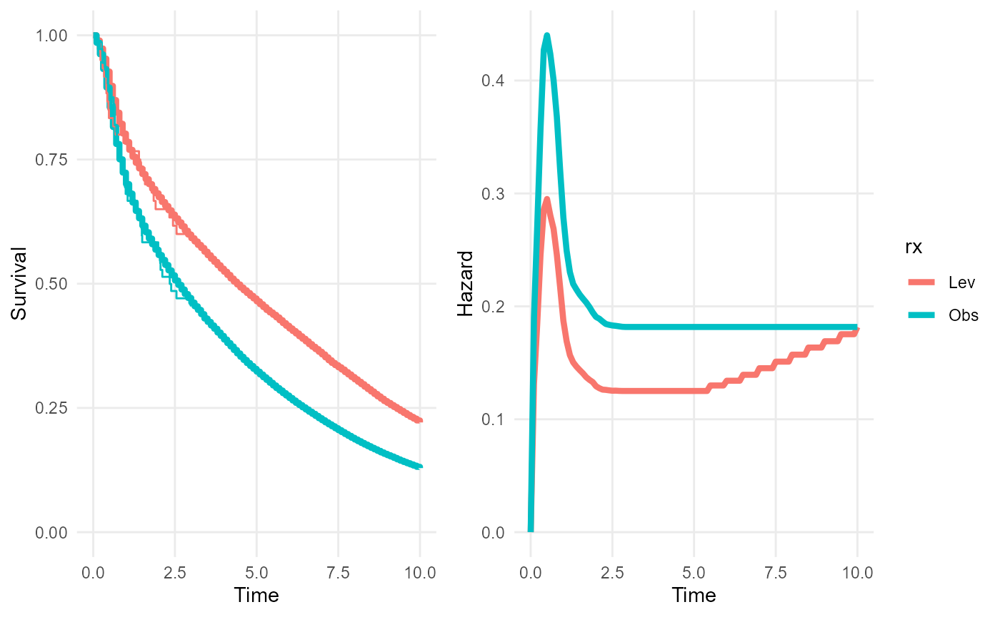

Details of methods behind survextrap
Christopher Jackson chris.jackson@mrc-bsu.cam.ac.uk
2024-06-29
Source:vignettes/methods.Rmd
methods.RmdSee the README for the design principles of the package, and the examples vignette for examples of how to fit models. A more formal account of the methods is given in the preprint paper.
M-splines
The axis of time is split into a set of regions defined by knots. In the example below, the knots are located at the integers from 1 to 10, as shown by the grid lines.
Each region is associated with a cubic polynomial function \(b_i(t)\), known as a basis function. M-spline basis functions are defined to be positive.
The hazard \(h(t)\) at time \(t\) is defined by a weighted sum of the basis functions:
\[h(t) = \eta \sum_i p_i b_i(t)\]
with
weights \(p_1,\ldots,p_n\) that sum to 1, \(\sum_i p_i = 1\), known as the basis coefficients.
a scale parameter \(\eta\) that describes the average level of the hazard.
Standard M-spline basis
In the standard basis, 10 knots implies there are 13 basis functions. Two of the basis functions have peaks at 0 and the upper knot, and the others have peaks around the knot, diminishing to zero on either side. See Ramsay for the exact definitions of \(b_i(t)\).
The package provides a few functions
(e.g. mspline_plotdata(), plot_mspline()) to
illustrate M-spline bases. The actual computation of the basis is done
with the splines2
package.
library(survextrap)
library(ggplot2)
mspline <- list(knots=1:10, degree=3, bsmooth=FALSE)
p_const <- mspline_constant_coefs(mspline)
p_naive <- rep(1/13, 13)
haz_unif <- mspline_plotdata(knots=mspline$knots, scale=10, coefs = p_const, bsmooth = FALSE)
plot_mspline(knots=mspline$knots, bsmooth=FALSE, scale=10, coefs = p_naive, tmax=11) +
geom_line(aes(x=time, y=haz), data=haz_unif, color="red", lwd=1.5, inherit.aes = FALSE) +
annotate(geom="text", x=2, y=1.5, color="red", label="h(t): coefficients `p_const`") +
annotate(geom="text", x=1.5, y=2.5, color="blue", label="h(t): coefficients `p_naive`") +
xlab("Time t") + ylab("Hazard rate")
Smoothed M-spline basis
An alternative basis is provided which is smoother at the upper knot
(defined by having zero derivative and second derivative at this point).
This is selected by setting bsmooth=TRUE in the various
package functions for defining M-splines.
mspline <- list(knots=1:10, degree=3, bsmooth=TRUE)
p_const <- mspline_constant_coefs(mspline)
p_naive <- rep(1/11, 11)
haz_unif <- mspline_plotdata(knots=mspline$knots, scale=1,
coefs = p_const, bsmooth = TRUE)
plot_mspline(knots=mspline$knots, bsmooth=TRUE,
scale=1, coefs = p_naive, tmax=11) +
geom_line(aes(x=time, y=haz), data=haz_unif,
color="red", lwd=1.5, inherit.aes = FALSE) +
annotate(geom="text", x=2, y=1.5, color="red",
label="h(t): coefficients `p_const`") +
annotate(geom="text", x=1.5, y=2.5, color="blue", label="h(t): coefficients `p_naive`") +
xlab("Time t") + ylab("Hazard rate") + coord_cartesian(ylim=c(0,1))
Using M-splines to represent particular hazard shapes
The coefficients \(p_i\) define how
the hazard changes through time. If knots are equally spaced, then \(p_i\) are nearly proportional to the hazard
in the \(i\)th region, so that if all
\(p_i\) are equal, then the hazard is
nearly constant (red line p_equal in the figure). It is not
exactly constant because of the influence of the regions at either end
of the space, whose polynomial functions have a skewed shape.
To produce a practically constant hazard, we can search numerically
for the \(p_i\) which minimise the
variance of a selection of points \(t\)
that span the area that we want to model. This search can be done
automatically in the package (red line p_const in the
figure).
Extrapolation? To fully specify a parametric time-to-event model, we have to define the hazard for times greater than the time \(t_{n}\) of the highest knot, which is 10 in the example.
The model in survextrap simply assumes that the hazard
for \(t > t_{n}\) is constant, the
same as the hazard at \(t_{n}\).
Therefore, if you want to estimate survival over a period where you think the hazard might not be constant, then you should make sure that the highest spline knot \(t_n\) is after the end of this period.
Sidenote. Another way to define the hazard beyond the last knot would be to extrapolate the final basis polynomials. This is how splines2 would compute the basis outside the boundary, but this is not implemented in
survextrap. Although it would lead to a more smoothly extrapolated hazard, it would be driven by data just before the boundary, and would be making opaque assumptions about how the hazard changes after the boundary. The idea behind the package is to make all assumptions explicit as data or mechanisms.
Examples of doing this with different kinds of data and knowledge are
given in vignette("examples").
Another arbitrary example of an M-spline curve, more wiggly than the one above:
plot_mspline(knots=c(1, 3, 5, 7),
coefs=c(0.01, 0.5, 0.1, 2, 0.6), tmax=10, bsmooth=TRUE) +
coord_cartesian(ylim=c(0, 1.2))
Why not other kinds of spline?
The Royston/Parmar model (e.g. in
flexsurv) uses a natural cubic spline for the log cumulative hazard function. A cumulative hazard is defined to be a non-decreasing function, but the spline is not constrained. The constraint is handled during fitting the model - spline coefficients which imply decreasing cumulative hazard functions are rejected. This is inefficient. A worse problem for Bayesian analysis of this model is that it is unclear how to specify priors - a meaningful joint prior on the coefficients would have to rule out invalid combinations.We could also have placed an unrestricted spline, of any kind, on the log hazard. The disadvantage with this is that the cumulative hazard (required to obtain the likelihood for censored data) then has to be evaluated by numerical integration, which is slow.
The advantage of putting an M-spline on the hazard is that it respects the constraint that a hazard has to be non-negative, while it can be integrated analytically to produce the cumulative hazard.
A remaining disadvantage of M-splines is that they still rely on a choice of knot locations. For modelling data, knots are generally chosen to give equal amounts of data between the knots. The user just has to define the number of knots. This approach generally works well in practice.
There are many different kinds of arbitrarily-flexible model (fractional polynomials, particular kinds of spline), which are all designed to fit the data very well. In practice, they may differ in their computational efficiency, and how easily we can construct priors for their parameters. Priors will be influential in the places where there are no data. Though for any model we can use simulation to calibrate priors to meaningful beliefs - see the priors vignette for examples. For extrapolation, we don’t want to rely on opaque nuances of the functional forms used in specific model families. Splines are at least computationally and conceptually simpler than other kinds of flexible model families, e.g. Gaussian or Dirichlet processes.
Bayesian model specification
The parameters of the model, \(p_i\) and \(\eta\), are estimated from data using Bayesian inference.
The flexibility of the fitted model is determined by two things.
The number \(n\) and choice of knots. This determines the maximum potential flexibility of the hazard function.
The prior distribution on the basis coefficients \(p_i\). This plays the role of smoothing the fitted hazard function.
The default approach taken by survextrap is to choose a
large number of knots and basis functions (the default is \(n=10\)), intended to accommodate all
reasonable situations, and then estimate the extent of
smoothing needed from the data.
With more data, the fitted curve is as flexible as necessary to represent the data.
With less data, the fit is influenced more by the prior.
This is a smoother, Bayesian analogue of the common approach to
spline model selection based on choosing \(n\) to give the model with the lowest AIC.
It also similar in principle to the “penalised likelihood” methods
implemented in e.g. the mgcv and rstpm2
packages.
All priors in the package can be chosen by the user (within given distribution families). See the priors vignette for examples and advice for doing this. The defaults in the package are all weakly informative, and should be reasonable if there are enough data, but to promote transparency of the analysis it is advised to think what priors might be reasonable and specify them explicitly.
Prior distribution for the hazard curve
A log-normal prior is used for the scale \(\eta\). The default in the package is normal(0, 20) for \(\log(\eta)\).
The prior for the basis coefficients \(p_i\), that describe the mass of the hazard in each region, is specified on the multinomial logistic scale, since \(\sum_i p_i = 1\). Define \(log(p_i / p_1) = \gamma_i\), with \(\gamma_1=0\), and \(\gamma_i = \mu_i + \sigma\epsilon_i\), for \(i = 2, \ldots, n\). The prior has the following parameters:
Prior mean: \(\boldsymbol{\mu} = (\mu_2,\ldots,\mu_n)\). By default, this is determined from the special set of \(p_i\) that result in a constant hazard \(h(t)\). See the
mspline_constant_coefs()function in the package to compute this.-
Prior variability: \(\sigma\) controls the smoothness of the fitted hazard curve.
If \(\sigma=0\), then we are certain that the hazard function (before being scaled by \(\eta\)) is the one defined by \(\boldsymbol{\mu}\). By default this is a constant hazard.
Values of \(\sigma\) around 1 favour wiggly curves, such that the fitted hazard curve is driven mainly by the the observed data.
For very high values of \(\sigma\), the hazard is dominated by a random one of the \(n\) basis functions, which will not typically be useful in practice.
-
A “random effect”: \(\epsilon_i\), which describes how much the \(i\)th basis coefficient departs from the mean, compared to the other basis coefficients. The default is an “exchangeable” model, with \(\epsilon_i \sim Logistic(0,1)\), so that the \(\gamma_i\) are conditionally independent given \(\mu_i\) and \(\sigma\).
An alternative, smoother model can be specified to relate the basis coefficients, using a random walk that constrains the \(\gamma_i\) closer to each other in time to be more similar to each other. This model is generated as \(\epsilon_1=0\), and \(\epsilon_i \sim Logistic(\epsilon_{i-1}, w_i)\) for any \(i \geq 2\). The weight \(w_i\) accounts for the difference in the time periods described by coefficients \(i\) and \(i-1\). This ensures that we are less inclined to allow hazard variations in regions of time where the knots are more closely-spaced, leading to a more realistically smooth function than if these weights were excluded. The exact definition of \(w_i\) is given in Phillippo et al. 2024, following principles from Li and Cao 2022.
Sidenote. This multinomial logistic distribution is similar to a Dirichlet distribution for the \(p_i\), but is slightly better behaved for how MCMC estimation is done in Stan. The interpretation of \(\sigma\) is not completely intuitive, but there is a function in the package (
prior_hsd()) to choose the prior on \(\sigma\) to match judgements about how much the hazard might vary over time.
The plots below show samples from the prior distribution for the hazard functions implied by two choices of the joint prior distribution for \(\eta\) and \(p\). In both, \(\eta\) is log normal(0,1), which supports hazard rates between about 0.1 and 7, and the prior mean for \(p\) is the special set that is centred around a constant hazard. The two samples differ by the choice of prior variability. \(\sigma \sim Gamma(2,40)\) strongly favours low values of \(\sigma\), which forces the hazard to be nearly uniform, while \(\sigma \sim Gamma(2,1)\) allows a wide range of wiggly shapes.
knots <- 1:10
mspline <- list(knots=knots)
p_mean <- mspline_constant_coefs(mspline)
set.seed(1)
p1 <- plot_prior_hazard(knots=knots, tmax=max(knots),
coefs_mean = p_mean,
prior_hsd = p_gamma(2, 40),
prior_hscale = p_normal(0, 1),
nsim=10) +
ylim(0, 1) + ggtitle(bquote(sigma ~ " ~ Gamma(2,40)"))
p2 <- plot_prior_hazard(knots=knots, tmax=max(knots),
coefs_mean = p_mean,
prior_hsd = p_gamma(2, 1),
prior_hscale = p_normal(0, 1),
nsim=10) +
ylim(0, 1) + ggtitle(bquote(sigma ~ "~ Gamma(2,1)"))
gridExtra::grid.arrange(p1, p2, nrow=1)
By default, the package estimates \(\sigma\) as part of the full Bayesian model (with a gamma(2,1) prior), so that uncertainty about the level of smoothness is accounted for.
If sampling is poor, then this alternative procedure might work - fit the model in two steps (“empirical Bayes”):
A “training” model fit is perfomed, where a prior is placed on \(\sigma\), and the maximum a posteriori estimate \(\hat\sigma\) of \(\sigma\) is determined.
A “final” model is then fitted, in which \(\sigma\) is fixed to \(\hat\sigma\), giving the “optimal” amount of smoothness for the hazard \(h(t)\).
The default choices in the package seems to under-smooth in some cases. Though it may not matter if the hazard function is under-smoothed, if the purpose of the model is to estimate a quantity that is an average over time (e.g. mean survival).
A sensible route to resolving these uncertainties might be use cross-validation to assess and choose between model specifications. The package provides an interface to the LOO-CV method for Bayesian cross-validation - though note that this only assesses fit to the individual-level data, using the same principle as AIC.
Choice of knots when modelling data
By default, internal knots are placed at the quantiles of the vector comprising the uncensored survival times in the individual level data, using 10 basis functions, and the smoothed version of the basis. Users can override these defaults however, and use any number of knots, placed at any position.
In particular, the default is to place the highest knot at the highest follow-up time in the data. This default should be overridden if you want to extrapolate, and you think the hazard might change. A sensible guide is to place the upper knot at the latest time that you are interested in modelling. Beyond this time, you either think the hazard will not change, or any changes in the hazard do not matter for whatever purpose the model is used for.
With external data, it is advisable to place knots manually to cover the time period of the data, the time period you want to estimate survival over, and to enable variations over time in the hazard to be estimated if the data allow this. Some examples are given in the cetuximab case study.
The priors should then be chosen to give a low probability that the hazard varies outside the range thought reasonable, e.g. in terms of orders of magnitude. See the priors vignette for detailed guidance on this.
The default number of knots does not depend on the absolute amount of data. With small datasets, we will be relying more strongly on the prior to do the smoothing. We could assess whether this matters by using LOO-CV cross-validation.
With external data, we want a choice of knots outside the data which we can defend as allowing a reasonable range of shapes for the hazard function, prior to observing the data.
Effect of covariates on the hazard
In survextrap, the hazard may also depend on a vector of
covariates \(\boldsymbol{x}\) as well
as time \(t\), and we write the hazard
as \(h(t,\boldsymbol{x})\).
Proportional hazards model
The default model fitted is a proportional hazards model, where the scale parameter \(\eta(\boldsymbol{x})\) is defined as a log-linear function of a vector of covariates \(\boldsymbol{x}\).
\[ \eta(\boldsymbol{x}) = \exp(\boldsymbol{\beta}^T \boldsymbol{x}) \]
In this model, the ratio between the hazards \(h(t,\boldsymbol{x})\) at two different values of \(\boldsymbol{x}\) is constant with respect to time \(t\). The hazard ratios (i.e. between a value of 1 and 0 for each \(\boldsymbol{x}\)) are \(exp(\boldsymbol{\beta})\).
Flexible, non-proportional hazards model
An alternative non-proportional hazards model is available. This is achieved by also modelling the spline coefficients \(p_i\) as functions of covariates, in addition to the log-linear model on \(\eta\).
\[log(p_i(\boldsymbol{x}) / p_1(\boldsymbol{x})) = \gamma_i(\boldsymbol{x)} \]
\[ \gamma_i(\boldsymbol{x)} \sim Logistic(\mu_i + \boldsymbol{\delta}^T_i \boldsymbol{x}, \sigma) \quad (i=2,...,n), \quad \delta_1 = 0 \]
The \(s\)th element of the vector \(\boldsymbol{\delta}_i\) describes the departure from proportional hazards for the \(s\mbox{th}\) covariate in the region of time associated with the \(i\)th spline basis term. With all \(\boldsymbol{\delta}_i = 0\) the model will be the proportional hazards model. Non-proportional hazards can be applied to any subset of the covariates if needed, or all covariates.
For each covariate \(s\), a hierarchical model is used for the non-proportionality effects \(\delta_{ks}\). This model “partially pools” the effects from different regions of time \(i\), either via an exchangeable model,
\[ \delta_{is} \sim Normal(0, \tau_s^2) \]
or a normal second-order random walk model, like the one used for the basis coefficients. In the non-proportional hazards model, the ratio between the hazards \(h(t,\boldsymbol{x})\) at different covariate values \(\boldsymbol{x}\) is a function of time \(t\). Since the \(\boldsymbol{\delta}_i\) may be arbirtarily different in each region of time \(i\), the hazard ratio can be an arbitrarily-flexible function of time. The amount and shape of non-proportionality is estimated from the data, while the hierarchical model protects against overfitting.
Cure models
The survextrap package implements a mixture cure version
of the M-spline model.
In a mixture cure model, the survival is defined by \(S(t | p, \boldsymbol{\theta}) = p +
(1-p)S_0(t|\boldsymbol{\theta})\), where \(p\) is sometimes termed the “cure
probability”, and \(S_0(t|\boldsymbol{\theta})\) is a
parametric model with parameters \(\boldsymbol{\theta}\), termed the “uncured
survival”. In survextrap, \(S_0\) is the M-spline model.
This model can be interpreted in two different ways:
as a mixture model, where a person has hazard \(h_1(t)=0\) at all times \(t\) with probability \(p\), or hazard \(h_0(t)\) at all times with probability \(1-p\).
as a model where everyone follows the same hazard function \(h(t) = f(t)/S(t)\), where the PDF is \(f(t) = (1-p)f_0(t)\), and \(f_0(t)\) is the PDF of the “uncured” parametric model. Hence \(h(t) = f_0(t) / (p/(1-p) + S_0(t))\), which asymptotically decreases towards zero with increasing \(t\) (as long as \(p>0\)).
Since we cannot observe whether censored observations are part of the “cured” subgroup, these interpretations are indistinguishable in practice.
Relative survival / additive hazards models
survextrap also implements a model where the overall
hazard is assumed to be the sum of two components corresponding to
different causes of death. These are usually termed the “background”
hazard \(h_b(t)\) and the
“cause-specific” or “excess” hazard \(h_c(t)\), so that \(h(t) = h_b(t) + h_c(t)\), where:
\(h_b(t)\) is assumed to be a known, piecewise-constant (step) function, and is provided by the user in a data frame that gives the background hazard in each of a series of time periods. See the examples.
\(h_c(t)\) follows the standard flexible parametric (M-spline) model used in
survextrap.
This is known as a “relative survival” model, since the additive model for the hazards implies a multiplicative model for survival: \(S(t) = S_b(t)S_c(t)\). This kind of model is often used when the background hazard is confidently known (from national statistics on general mortality) and the cause-specific hazard can be inferred from the individual-level data.
The model used in survextrap is a variant of the model
by Nelson
et al and should give similar results. The only difference is that
the model in survextrap is Bayesian, and a different kind
of spline is used.
Combining relative survival and cure models
To use a cure model and a relative survival model together, \(h_c(t)\) is defined by a mixture cure version of the M-spline model, and a background hazard data set is supplied to define \(h_b(t)\). This allows the overall hazard \(h(t)\) to decrease asymptotically towards a background hazard \(h_b(t)\), instead of decreasing towards zero.
This model is appropriate if we are sure that people with the disease are eventually “cured”, or alternatively, their risk from the disease becomes negligible compared to their risk of death from other causes, and we have good information about general mortality and when this starts to dominate. Therefore average survival is estimated by naturally combining short-term information on disease-specific survival with long-term data on general mortality.
Treatment effect waning models
Principles
Suppose we have short-term data, say from a trial of a treatment against a control. The trial data is assumed to be representative of the treatment effect in the short term. We may also have long-term data that gives information about the survival in the control group. However we do not believe that the effect of the treatment will continue. In the long term, we suppose the treatment effect “wanes” or diminishes, so that over time the treatment and control group will have similar risks.
How is this done in survextrap? Essentially:
We fit a
survextrap(M-spline) model that combines the short-term data with the long-term data on the control group. From this model, we estimate the short-term treatment effect (e.g. with a proportional hazards model), and the long-term survival in the control group.However, we do not want to use the model directly to estimate long-term survival in the treatment group, because it relies on the assumption that the hazard ratio in the short term continues in the longer term. Instead, to predict long-term survival in the treatment group we assume that the treatment effect wanes over some time interval from \(t_{min}\) to \(t_{max}\), where \(t_{min}\) is after the follow-up period of the trial.
Waning model: details
Specifically, to predict the long-term hazard \(h(t | x=1)\) in the treated group, we assume:
Between time \(t=0\) and \(t=t_{min}\), \(h(t | x=1)\) is equal to the hazard in the treated group \(x=1\), estimated from the model.
After time \(t=t_{max}\), \(h(t | x=1)\) is equal to the hazard in the control group \(h(t | x=0)\), estimated from the model.
-
During the interval between \(t = t_{min}\) and \(t = t_{max}\), the log hazard ratio \(\log(hr(t)) = \log(h(t|x=1) | h(t|x=0))\) diminishes linearly between the log hazard ratio \(\log(hr(t_{min}))\) at \(t_{min}\), estimated from the model, and zero at \(t_{max}\). That is, \(\log(hr(t)) = w \log(hr(t_{min}))\), where \(w = (t - t_{min}) / (t_{max} - t_{min})\).
Hence the predicted hazard for the treated group at \(t\) is defined from the M-spline model as \(h(t|x=1) = h(t | x=0) hr(t)\), where \(h(t|x=0)\) comes from the fitted M-spline model.
A piecewise-constant approximation, on a fine grid, is then imposed on the hazard within the waning period to allow easy calculation of the cumulative hazard, survival and related quantities.
Note that the waning assumption is implemented during prediction from the fitted model, rather than as a “prior” or structural assumption used during model fitting. The baseline log hazard ratio at \(t_{min}\) is inferred from the M-spline model, short-term data and any long-term data provided. Then when requesting predictions of, e.g., survival curves, hazard curves or mean survival times from this fitted model, we can optionally request that over some interval \(t_{min},t_{max}\) the log hazard ratio for some covariate changes linearly between the value estimated from the model and some “null” value.
The fitted M-spline model does not necessarily need to be a proportional hazards model to use treatment waning. If the fitted model is non-proportional hazards, the hazard ratio will be non-constant between time 0 and \(t_{min}\), then wane between the value at \(t_{min}\) and zero at \(t_{max}\).
Waning models: example
For clarity here, we subset the example data to only two out of the three treatment groups: observation-only and levamisole.
First we fit a survextrap model (arbitrarily, for this
example, an M-spline model with 5 basis terms). See the examples vignette for more examples of calling
survextrap function.
We extrapolate the survival and hazard curves up to 10 years under a naive assumption of proportional hazards beyond the end of follow-up (3 years).
library(dplyr)
library(survextrap)
colons2 <- colons %>% filter(rx %in% c("Obs", "Lev")) %>% droplevels()
rxph_mod <- survextrap(Surv(years, status) ~ rx, data=colons2,
fit_method="opt", mspline=list(df=5))
plot(rxph_mod, tmax=10, niter=100)
To predict from this model under a waning treatment effect we must define the following:
wane_period: a vector containing the start and end of the period over which the effect wanesnewdata: the covariate values that define the hazard under the “full” effect (before waning starts)newdata0: the covariate values that define the hazard under the “null” effect (after waning finishes)
Optionally we can also supply wane_nt, which defines the
number of intervals to use for the grid approximation to the hazard
within the waning period. This defaults to 10, which I’d expect to be
sufficient in practice.
These things are supplied as arguments to the functions
survival, hazard and rmst, and
the plot and mean methods for survextrap
objects.
In this example, we predict the survival and hazard over 10 years for the treated and control groups. The treated group is assumed to experience treatment effect waning - so that between 5 and 10 years, their log hazard changes linearly between the modelled hazard of the treated group and the modelled hazard of the control group.
To obtain predictions for both groups, we first define the “full” and “null” covariate values, as data frames with two rows, one for the treated group and one for the control group. Note for the control group, the “full” and “null” covariate values are the same.
nd_full <- data.frame(rx = c("Lev","Obs"))
nd_null <- data.frame(rx = c("Obs","Obs"))We then supply these as arguments to the plot method,
along with a definition of the waning period (5 to 10 years), to
illustrate the survival and hazard trajectories for each group under
this waning model. Note how the hazard curves converge over the waning
period. The survival curves have only just started to converge - the
effects of the waning on survival would be more noticeable over longer
extrapolation periods (say 30-40 years).

We also compare the restricted mean survival times (up to 50 years) with and without treatment waning. The consequence of the waning treatment effect is to reduce this long term mean survival time under the treated group by about three years. (Combining waning with computation of the restricted mean is computationally intensive, so in this illustration, we only use a sample of 20 from the posterior distribution).
## # A tibble: 2 × 6
## variable rx t median lower upper
## <chr> <chr> <dbl> <dbl> <dbl> <dbl>
## 1 rmst Lev 50 8.25 4.29 20.5
## 2 rmst Obs 50 4.95 3.06 12.3## # A tibble: 2 × 6
## variable rx t median lower upper
## <chr> <chr> <dbl> <dbl> <dbl> <dbl>
## 1 rmst Lev 50 7.22 4.34 22.0
## 2 rmst Obs 50 4.88 3.46 15.8Waning models: distribution utilities
Distribution and random number generation functions for the “waning
effect” model are available as psurvmspline_wane(),
Hsurvmspline_wane(), hsurvmspline_wane(),
dsurvmspline_wane(), qsurvmspline_wane(),
rsurvmspline_wane(), to enable users to construct other
summaries or predictions from this model.